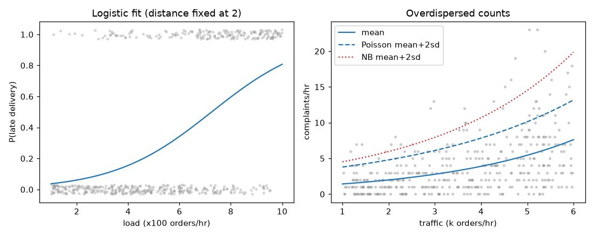

Ordinary linear regression predicts a number that can be anything: 120 minutes, minus 5, 3.7. But many real questions are different. "Will this parcel arrive late, yes or no?" has only two answers. "How many complaints will we get this hour?" is a count: 0, 1, 2, never 2.5 and never negative. If you force a straight line onto these, it predicts probabilities of 130 percent and error counts below zero. Generalized linear models (GLMs) fix this with one clean idea. In this chapter you learn the idea, fit logistic and Poisson regressions with a short NumPy routine, read odds ratios and marginal effects, test whether a model fits using deviance, and handle the common failure of "too much variation" with the negative binomial model. We build on OLS and MLE (see the Math PDF for MLE and log-loss) and on AIC from Chapter 7.
Two running examples, both simulated with a fixed seed so the numbers are repeatable:
load (in units of 100 orders per hour, 1 to 10) and distance (in 10 km units, 0 to 5). The outcome is 1 if the parcel arrived late. Result: 184 of 500 were late (36.8 percent).statsmodels is not installed in this environment, so I fitted the models with my own iteratively reweighted least squares (IRLS) code. In real work you would call statsmodels.api.GLM or sklearn; the numbers match because it is the same maths. Library calls shown below are standard but "not run here".
η = β₀ + β₁x₁ + β₂x₂. That score can be any number from minus to plus infinity. A probability must stay between 0 and 1. A count must stay at or above 0. So we pass the score through a bent pipe (a link function) that squeezes it into the allowed range. The score itself stays a simple straight-line formula.| Word | Plain meaning | Example |
|---|---|---|
| Linear predictor η | The straight-line score β₀ + β₁x₁ + … | η = −0.65 |
| Link function g | Connects the mean of y to η: g(mean) = η | logit, log |
| Inverse link | Turns η back into a mean | 1/(1 + e^(−η)) |
| Family | The distribution of y around its mean | Bernoulli, Poisson |
| Deviance | A fit score: 2 × (ℓ_saturated − ℓ_model), lower is better | 500.8 |
A GLM has three parts: (1) a distribution for y (the family), (2) a linear predictor η, (3) a link g(μ) = η, where μ is the mean of y.
| Model | Family | Link g(μ) | Mean μ in terms of η | y looks like |
|---|---|---|---|---|
| Linear regression | Normal | identity: μ | μ = η | any number |
| Logistic regression | Bernoulli / Binomial | logit: ln(μ/(1−μ)) | μ = 1/(1+e^(−η)) | 0 or 1 |
| Poisson regression | Poisson | log: ln μ | μ = e^η | count 0, 1, 2… |
| Negative binomial | Neg. binomial | log: ln μ | μ = e^η | overdispersed count |
| Gamma regression | Gamma | log (or inverse) | μ = e^η | positive, skewed (delivery time) |
Why not just predict the mean with a straight line? Because the line leaves the allowed range. Why the log for counts? Effects become multiplicative: adding 1 to x multiplies the expected count by e^β. That matches how busy periods tend to act on complaint counts.
We use maximum likelihood (MLE). For these models there is no closed formula, so we use IRLS: repeat a weighted least-squares fit, updating weights from the current fit, until the coefficients stop changing. This is Newton's method (see Math PDF, second-order optimisation) in a special form. It typically converges in 5 to 8 rounds. Our code converged in 6 for both examples.
Problem 8.1.1 (tiny) A model has η = −0.65. What probability does the logit link give, and what do the odds equal?
| Formula | p = 1 / (1 + e^(−η)) |
|---|---|
| Plug in | e^(0.65) = 1.9155, so p = 1/(1 + 1.9155) |
| Compute | p = 1/2.9155 = 0.343. Odds = p/(1−p) = 0.343/0.657 = 0.522, and e^(−0.65) = 0.522. |
| Answer | η = −0.65 means a 34.3 percent chance. The odds equal e^η. |
| Check | η = 0 gives p = 0.5; negative η must give p below 0.5. Yes. |
| Why it matters | η is on the "log-odds" scale; always convert before you report to a manager. |
Problem 8.1.2 Poisson model with η = 0.15 + 0.35 × traffic. What is the expected complaint count at traffic = 4?
| Step 1 | η = 0.15 + 0.35 × 4 = 1.55. |
|---|---|
| Step 2 | μ = e^1.55 = 4.71. |
| Answer | About 4.7 complaints per hour. |
| Check | The result is positive, as a count's mean must be. A linear model could have given a negative number at low traffic. |
exp or compute probabilities.Connection to the real job. statsmodels.api.GLM(y, X, family=sm.families.Binomial()) and …Poisson(); sklearn.linear_model.LogisticRegression, PoissonRegressor, GammaRegressor. Logistic regression is the first classifier you will meet in ML.
Applications
Check yourself
odds = p / (1 − p)
logit = ln(odds) = ln(p / (1 − p)) = β₀ + β₁x₁ + β₂x₂
p = 1 / (1 + e^(−logit))Each coefficient βⱼ is the change in log-odds for one unit of xⱼ, others fixed. e^βⱼ is the odds ratio (OR): the factor by which the odds are multiplied. OR = 1 means no effect, above 1 raises the odds, below 1 lowers them. The likelihood to maximise is Σ [y ln p + (1−y) ln(1−p)], whose negative is the log-loss (see Math PDF).
| p | odds | log-odds |
|---|---|---|
| 0.5 | 1 | 0 |
| 0.2 | 0.25 | −1.386 |
| 0.8 | 4 | +1.386 |
| 0.9 | 9 | +2.197 |
Notice the symmetry: p = 0.2 and p = 0.8 have log-odds of the same size and opposite sign.
Problem 8.2.1 Fit a logistic regression for late deliveries on the 500 parcels. Report the coefficients, standard errors, odds ratios and 95 percent confidence intervals.
| Formula | CI for OR = exp(β ± 1.96 × SE). The z statistic is β / SE. |
|---|---|
| Compute | (from code, 6 IRLS iterations): |
| Term | β | SE | z | p-value | Odds ratio | 95% CI for OR |
|---|---|---|---|---|---|---|
| constant | −4.395 | 0.424 | −10.36 | ~0 | 0.012 | 0.005 to 0.028 |
| load (per 100 orders/hour) | 0.521 | 0.051 | 10.16 | ~0 | 1.683 | 1.522 to 1.861 |
| distance (per 10 km) | 0.309 | 0.079 | 3.91 | 0.00009 | 1.362 | 1.166 to 1.590 |
Problem 8.2.2 (combining ideas) What is the late-delivery probability at load = 6 and distance = 2? What happens if load goes to 7?
| Step 1 | η = −4.395 + 0.5209 × 6 + 0.3087 × 2 = −4.395 + 3.125 + 0.617 = −0.653. |
|---|---|
| Step 2 | p = 1/(1 + e^0.653) = 1/(1 + 1.921) = 0.342. Odds = 0.521. |
| Step 3 | At load 7: η = −0.132, p = 0.467, so the new odds are 0.467/0.533 = 0.877. New odds / old odds = 0.877/0.521 = 1.683 (code: 1.6835), equal to the OR. |
| Answer | 34.2 percent at load 6, and 46.7 percent at load 7. The probability rose by 12.5 percentage points while the odds rose by a factor of 1.68. |
| Check | The ratio of odds equals e^β exactly, a good test of the algebra. |
| Why it matters | The OR is constant but the probability change is not: it depends on where you start. |
A marginal effect answers "how much does the probability change per unit of x?" For logistic regression it is p(1−p) × β, so it changes with p. The average marginal effect (AME) averages this over all rows. Here, AME for load = 0.0862, so on average one more 100 orders per hour adds about 8.6 percentage points of timeout probability; AME for payload = 0.0511, about 5.1 points per 10 KB. Non-linear models need this to give a plain-language answer.

Left panel: grey dots are the 500 parcels (0 = on time, 1 = late, jittered a little so you can see them) against load. The blue S-curve is the fitted probability with distance held at 2. It is flat near 0 on the left, rises steeply in the middle, and flattens near 1 on the right. The steepest part is where p ≈ 0.5, where the marginal effect is largest (β/4 = 0.13 per unit load). The right panel belongs to section 8.4.
| Quantity | Value (from code) | Meaning |
|---|---|---|
| Log-likelihood of model | −250.41 | Higher is better |
| Log-likelihood of intercept-only | −328.94 | The "no-feature" baseline |
| Residual deviance (−2ℓ) | 500.83 | Lower is better |
| Null deviance | 657.88 | Deviance with only the constant |
| Likelihood-ratio test | 157.05 on 2 df, p ≈ 8 × 10⁻³⁵ | The features help |
| AIC | 506.83 | For comparing models, as in Chapter 7 |
| McFadden pseudo-R² | 1 − (−250.41/−328.94) = 0.239 | Not like OLS R²; 0.2 to 0.4 is already good |
| Accuracy at threshold 0.5 | 0.748 | Not enough alone (see below) |
The LR test is "deviance drop = null − residual = 657.88 − 500.83 = 157.05", compared with a chi-square with 2 degrees of freedom (one per added feature).
Connection to the real job. Logistic regression is the standard baseline for any yes/no prediction: it is fast, explainable, and gives odds ratios you can show to a manager. It is also the model inside many risk scorecards at banks.
Applications
LogisticRegression(C=…), where C = 1/λ).Check yourself
y ~ Poisson(μ), ln μ = β₀ + β₁x so μ = e^(β₀ + β₁x)A key property of the Poisson distribution is mean = variance = μ (see Chapter 2 on distributions). e^β₁ is the rate ratio: the factor by which the expected count is multiplied for a unit increase in x.
Exposure and offsets. If hours differ in length, or counts come from systems of different size, model the rate: ln μ = ln(exposure) + β₀ + β₁x. The ln(exposure) term is an offset: a column whose coefficient is forced to 1 (GLM(..., offset=np.log(exposure)) in statsmodels; not run here). Without it you would compare a 10-minute window with a 60-minute window unfairly.
Problem 8.3.1 Fit Poisson regression for complaints per hour on 300 hours of traffic data.
| Compute | (from code): intercept 0.1488 (SE 0.0885), traffic slope 0.3482 (SE 0.0202), 6 iterations. True values used to simulate: 0.2 and 0.35. |
|---|---|
| Answer | Rate ratio = e^0.3482 = 1.416. Each additional 1,000 orders per hour multiplies the expected complaint count by 1.42, a 42 percent rise. |
| Check | Slope z = 0.3482/0.0202 = 17.2: very significant. Data mean count 4.37 and variance 9.65: the variance is bigger than the mean, but part of that is explained by the changing μ across hours, not by overdispersion, as the next check shows. |
| Why it matters | Compounding is the point: 5 more thousand multiplies by 1.416⁵ = 5.7, not by 1 + 5 × 0.42. |
Problem 8.3.2 Is the Poisson model a good fit? Use the deviance and the Pearson ratio.
| Formula | Residual deviance = 2 Σ [y ln(y/μ̂) − (y − μ̂)]. Pearson dispersion = Σ (y − μ̂)² / μ̂ / (n − p). |
|---|---|
| Compute | Deviance = 347.41 on 298 degrees of freedom (300 rows − 2 parameters). Pearson ratio = 1.056. |
| Answer | For a well-fitting Poisson model both ratios are close to 1. Deviance/df = 1.17 and Pearson = 1.06 are fine. No sign of overdispersion. |
| Check | Mean and variance of residual counts should be close once μ̂ is used. Pearson near 1.0 says so. |
| Why it matters | This test costs nothing and prevents wrong confidence intervals. |
Connection to the real job. Counts per time unit (orders, tickets, defects, calls), rate modelling with exposure, and demand forecasting inputs. Also the loss in many deep-learning count models.
Applications
Check yourself
Overdispersion means variance is greater than the mean. The negative binomial (NB) regression keeps the log link and the mean μ = e^η, but the variance is
Var(y) = μ + α × μ² (α ≥ 0; α = 0 is Poisson)It arises when the Poisson rate is itself random with a Gamma distribution (a "Gamma-Poisson mixture"). A big α means lots of extra wobble.
Problem 8.4.1 Simulate 400 hours where the true model has mean e^(0.2 + 0.3 × traffic) and α = 0.5. Fit Poisson first. Then fit NB.
| Step 1 | Data: mean count = 3.76 but variance = 15.19. Variance is four times the mean. Red flag. |
|---|---|
| Step 2 | Poisson fit: intercept 0.016, slope 0.3358 (SE 0.0192). Pearson dispersion = 2.87. A value well above 1 confirms overdispersion. |
| Step 3 | The quasi-Poisson fix: multiply the SE by √2.87 = 1.695: slope SE becomes 0.0326, which is 1.7 times larger. The point estimate stays the same. |
| Step 4 | NB fit by maximum likelihood (scipy.optimize, BFGS): intercept 0.007, slope 0.3379 (numerical SE 0.0317), α = 0.507. True α was 0.5. |
| Step 5 | Compare: Poisson log-likelihood −1078.21, AIC 2160.4. NB log-likelihood −924.49, AIC 1854.97 (3 parameters including α). |
| Answer | NB wins by 305 AIC points; α is recovered correctly at 0.507. The Poisson SE (0.0192) was too small by about 40 percent compared to the NB SE (0.0317). |
| Check | The NB-based SE (0.0317) and the quasi-Poisson SE (0.0326) agree. LR statistic for α = 0 is 307.4 (a very large number, so overdispersion is real). |
| Why it matters | With the Poisson SE, you would have reported a confidence interval that is 40 percent too narrow, and "significant" results that are not. |
The right panel of the figure above shows this. Grey dots are the counts. The solid line is the fitted mean. The dashed line is "mean + 2 standard deviations" under Poisson, which cuts across the cloud, so many dots lie above it. The red dotted line is the same band under NB, wider and about right.
Other counts problems you may meet: too many zeros (zero-inflated models), counts that can never be zero (truncated models). Both are extensions; ignore them until you see a histogram with a large spike at 0.
Connection to the real job. sm.GLM(..., family=sm.families.NegativeBinomial(alpha=…)) or sm.NegativeBinomial (the latter estimates α; not run here). In scikit-learn there is PoissonRegressor but no standard NB regressor.
Applications
Check yourself
| Outcome | First model | Check | If it fails |
|---|---|---|---|
| Yes/No | Logistic (logit) | Calibration, separation | Penalised logistic, probit, tree models |
| Count per time | Poisson (log) + offset | Pearson/deviance ratio near 1 | NB or quasi-Poisson |
| Count with many zeros | Poisson/NB | Compare predicted vs actual zeros | Zero-inflated model |
| Positive skewed amount (delivery time, cost) | Gamma (log) | Residual plots | Log-transform + OLS, or quantile regression |
| Proportion out of n trials | Binomial (logit) with weights | Dispersion | Beta-binomial |
| Any number | Linear (identity) | Chapter on regression diagnostics | Robust regression |
e^β is the odds ratio. Odds are not probability; report marginal effects for probability changes.e^β is a rate ratio, effects multiply; use an offset for unequal exposure.| Item | Formula | Note |
|---|---|---|
| Odds, logit | p/(1−p), ln(p/(1−p)) | logit = η |
| Inverse logit | p = 1/(1+e^(−η)) | sigmoid |
| Odds ratio | e^β | CI: exp(β ± 1.96·SE) |
| AME (logit) | mean(p(1−p)) × β | percentage points |
| Poisson | μ = e^η, rate ratio e^β | mean = variance |
| NB variance | μ + αμ² | α = 0 is Poisson |
| Deviance | 2(ℓ_sat − ℓ_model) | LR test = null dev − resid dev |
| Pearson dispersion | Σ(y−μ̂)²/μ̂ / (n−p) | near 1 is good |
1 (easy). p = 0.75. Give odds and log-odds. Answer: Odds = 0.75/0.25 = 3. Log-odds = ln 3 = 1.099.
2 (easy). A logistic coefficient is β = −0.7. What is the OR, and what does it say? Answer: e^(−0.7) = 0.497. The odds are halved for each unit increase.
3 (easy). A Poisson model has η = 2. What is the expected count? Answer: e² = 7.39.
4. Output: log-odds = ln(4) for a parcel. What is p? Answer: Odds 4, p = 4/(1+4) = 0.8.
5. A logistic model for conversion has intercept −3 and slope 0.5 per page view. Find p for 4 page views and the AME-like slope at that point. Answer: η = −3 + 2 = −1. p = 1/(1+e) = 0.269. Slope = p(1−p)β = 0.269 × 0.731 × 0.5 = 0.098 per page view.
6 (find the bug). A report says: "OR = 3.0 for the new UI, so users are 3 times as likely to convert." Baseline conversion was 40 percent. What is wrong, and what is the real new probability? Answer: OR describes odds, not probability. Baseline odds = 0.4/0.6 = 0.667. New odds = 2.0. New p = 2/3 = 0.667. Users are 1.67 times as likely (66.7 vs 40 percent), not 3 times.
7. Poisson fit gives Pearson dispersion 3.4 with SE of slope 0.02. What do you do and what is the corrected SE (quasi-Poisson)? Answer: Overdispersed. Use NB or quasi-Poisson. Quasi SE = 0.02 × √3.4 = 0.02 × 1.844 = 0.0369.
8. A log-likelihood is −120 for the model and −150 for the intercept-only model, with 3 extra parameters. Compute LR statistic, the McFadden R² and say whether it's significant (chi-square 5 percent critical value with 3 df = 7.81). Answer: LR = 2 × (−120 − (−150)) = 60 > 7.81, highly significant. McFadden = 1 − 120/150 = 0.20.
9 (scenario). Complaint counts are recorded for windows of 10, 30 and 60 minutes. How do you model them? Answer: Poisson (or NB) with a log link and offset ln(window length in minutes), so coefficients describe complaints per minute.
10 (scenario). A logistic model on 20 features has a coefficient of 18.4 on one feature and a convergence warning. What probably happened and what do you do? Answer: Perfect or near-perfect separation by that feature. Check the crosstab of that feature against y, remove or bin it, or add L2 regularization.
11 (interview). Explain the odds ratio to a product manager in two sentences. Answer: "For every extra 100 orders per hour, the odds that a parcel arrives late go up by about 68 percent (odds ratio 1.68). Odds are a different way to express chance, so in probability terms the jump depends on where you start: from 34 percent it goes to about 47 percent."
12 (interview). Why use negative binomial rather than Poisson, and what changes in your results? Answer: Real counts often have variance larger than the mean. Poisson assumes equality, so its standard errors are too small and p-values too optimistic. NB adds a dispersion parameter α with Var = μ + αμ². The estimated effects stay similar, but standard errors become honest and the fit (AIC) improves a lot when overdispersion is present.
You are my patient, practical professor. I am a working professional moving into data roles. Teach me logistic regression from scratch: odds, log-odds, the sigmoid link, maximum likelihood and how IRLS or gradient descent fits it. Use a tiny 6-row dataset I can compute by hand, then a NumPy version. Explain odds ratios and marginal effects in plain English, and check my understanding with 4 questions, one at a time.
You are my patient, practical professor. I am a working professional moving into data roles. Explain generalized linear models: family, linear predictor, link function, deviance and the likelihood-ratio test. Show how linear, logistic, Poisson and gamma regression fit into one framework with a table. Then give me 8 graded exercises WITHOUT solutions, using small numbers, and wait for my answers.
You are my patient, practical professor. I am a working professional moving into data roles. Teach me Poisson and negative binomial regression for complaint counts per hour. Cover rate ratios, offsets for unequal time windows, overdispersion tests, and why standard errors go wrong under overdispersion. Include a statsmodels example and tell me honestly which output lines to read. Quiz me with 5 scenario questions, one at a time.
You are my patient, practical professor. I am a working professional moving into data roles. Review my GLM analysis: [PASTE HERE]. Check that I chose the right family and link, interpreted coefficients on the right scale (odds ratio or rate ratio), checked dispersion or separation, and did not confuse odds with probability. List each problem and show a corrected interpretation in simple English.
You are my patient, practical professor. I am a working professional moving into data roles. Run a mock interview on logistic regression, odds ratios, link functions, Poisson regression, overdispersion and negative binomial models. Ask one question at a time, wait for my answer, then give a score out of 10 and a short model answer. Ask 8 questions, easy to hard, with at least two real-world scenarios.